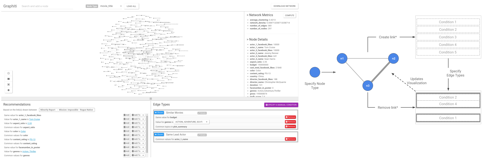

Arjun Srinivasan, Hyunwoo Park, Alex Endert, and Rahul C. Basole
Network visualizations, often in the form of node-link diagrams, are an effective means to understand relationships between entities, discover entities with interesting characteristics, and to identify clusters. While several existing tools allow users to visualize pre-defined networks, creating these networks from raw data remains a challenging task, often requiring users to program custom scripts or write complex SQL commands. Some existing tools also allow users to both visualize and model networks. Interaction techniques adopted by these tools often assume users know the exact conditions for defining edges in the resulting networks. This assumption may not always hold true, however. In cases where users do not know much about attributes in the dataset or when there are several attributes to choose from, users may not know which attributes they could use to formulate linking conditions. We propose an alternate interaction technique to model networks that allows users to demonstrate to the system a subset of nodes and links they wish to see in the resulting network. The system, in response, recommends conditions that can be used to model networks based on the specified nodes and links. In this paper, we show how such a demonstration-based interaction technique can be used to model networks by employing it in a prototype tool, Graphiti. Through multiple usage scenarios, we show how Graphiti not only allows users to model networks from a tabular dataset but also facilitates updating a pre-defined network with additional edge types.